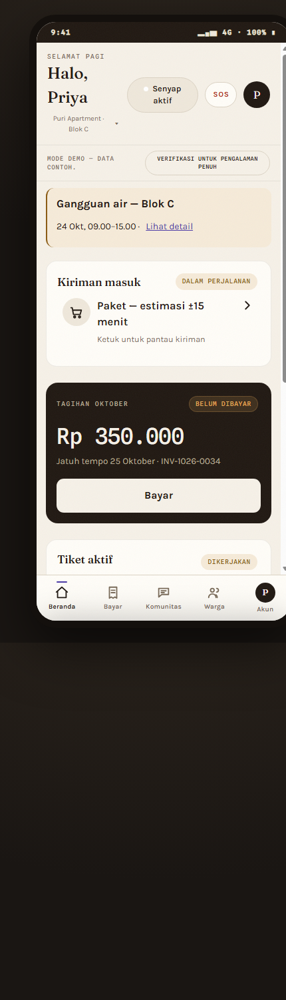
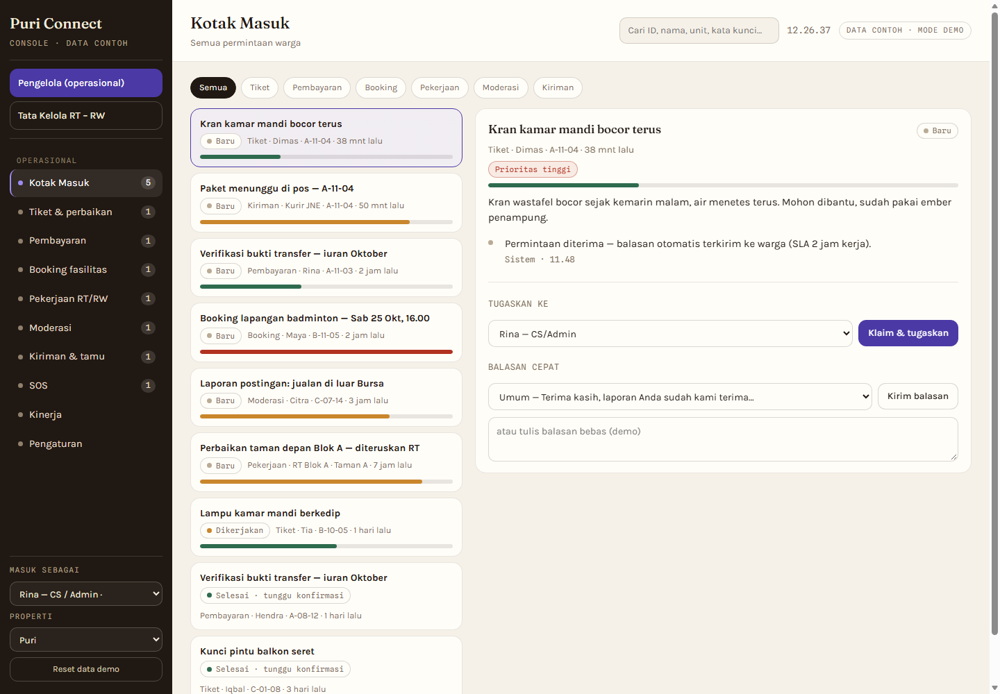
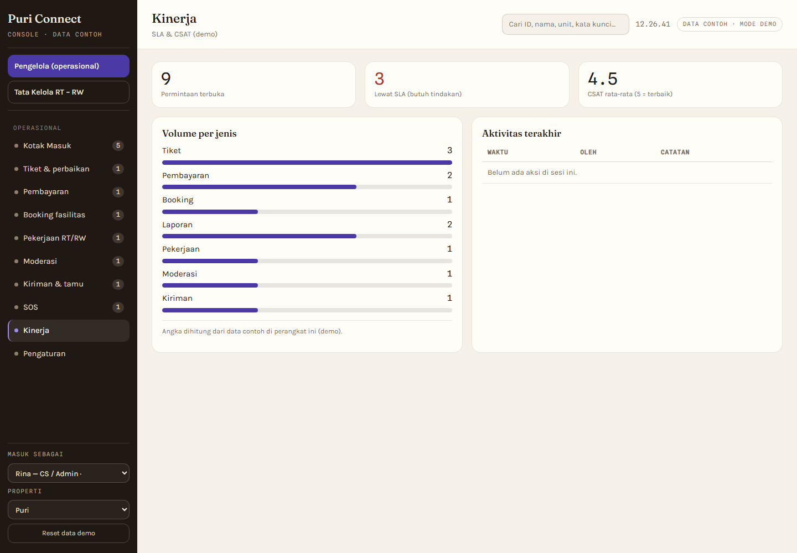

Aplikasi warga, aplikasi operator (console pengelola & tata kelola RT–RW), dan dashboard kinerja — dibangun dengan satu bahasa desain (Lontar Modern), data contoh, tanpa koneksi server.

Tiket perbaikan, SOS, pembayaran, booking fasilitas, tamu & kiriman, komunitas, olahraga (mabar & kompetisi), petisi, bursa 2.0.

Console pengelola & tata kelola RT–RW: kotak masuk, tiket & SOS, verifikasi bayar, laporan warga → pekerjaan, kerja bakti, kegiatan, pengumuman, moderasi.

SLA lewat batas, CSAT rata-rata, permintaan terbuka, volume per jenis, dan log aktivitas — untuk CS lead dan pengurus.